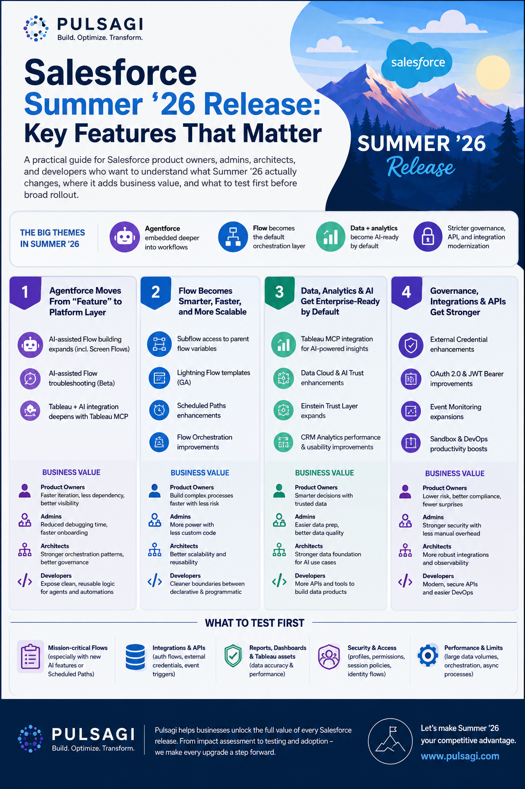

What changed in Summer '26
The Salesforce Summer '26 release is not just another seasonal feature dump. It meaningfully shifts three layers of the platform: agent orchestration, admin productivity, and developer workflow. That combination matters because most enterprise teams are no longer asking whether they should automate more. They are asking how to automate without increasing operational drag, security risk, or maintenance overhead.
From a product owner perspective, Summer '26 is strongest when you treat it as a portfolio prioritization release. The biggest wins do not come from enabling everything. They come from identifying the few features that remove real friction in service delivery, internal operations, and release velocity.
This article focuses on the Summer '26 features that are most relevant to practical Salesforce delivery teams: what they do, where they fit, and how I would sequence adoption.
Release dates and rollout
As of May 18, 2026, Summer '26 is in active rollout. The important point is that not every org receives the update on the same day, so teams should work with exact dates instead of vague phrases like "this month" or "soon."
| Milestone | Date | Why it matters |
|---|---|---|
| Pre-release org sign-up opens | April 16, 2026 | Useful for early feature exploration without waiting for sandbox upgrades. |
| Sandbox preview begins | May 8, 2026 | Your best window to test flows, permissions, integrations, and custom UI before production maintenance. |
| Main production release weekends | May 9, June 5, and June 12, 2026 | Your org's exact cutover depends on instance maintenance scheduling. |
| Salesforce Summer '26 release announcement | May 11, 2026 | Good reference point for the officially promoted cross-cloud highlights. |
| Broad availability messaging on Salesforce release announcement | June 15, 2026 | This appears to reflect the end of the primary rollout window rather than every org's exact upgrade moment. |
In practice, use Salesforce Trust for your org-specific maintenance date, but plan release testing around the dates above so your project team is not surprised by environment drift.
10 key features at a glance
| Feature | What it does | Best use case | Why it matters |
|---|---|---|---|
| Multi-Agent Orchestration | Lets multiple agents work together with shared context across a single resolution path. | Complex service or employee workflows that span more than one team. | Moves Agentforce closer to real enterprise operating models instead of isolated bot interactions. |
| Tableau MCP | Allows AI agents to query Tableau analytics more directly through a trusted integration layer. | Executive insights, performance analysis, and conversational analytics. | Improves the odds that AI answers are grounded in governed business metrics. |
| Agentforce Self-Service | Adds a more guided, agent-first self-service experience with Help Agent and portal enhancements. | Customer support portals and high-volume self-resolution journeys. | Reduces the gap between knowledge content and actual resolution. |
| Customer Engagement Agent | Engages and qualifies leads continuously across web and email channels. | Inbound lead response and qualification. | Targets a real revenue problem: slow human follow-up on warm interest. |
| Screen Flow Data Table lookup improvements | Shows related record names instead of raw IDs and can open related records from the table. | Case triage, order review, approval, or service flows with related records. | Eliminates one of the more frustrating admin UX workarounds. |
| Scheduled Flow batching | Lets admins set a custom batch size from 1 to 200 for scheduled flows. | Heavy scheduled automations with callouts, enrichment, or large updates. | Gives teams better control over limit pressure and runtime stability. |
| Field Access Summary | Shows field-level access across profiles, permission sets, and permission set groups in one place. | Security audits, troubleshooting, and role redesign. | Saves admin time and improves permission diagnostics. |
| Flow Orchestration as a standard feature | Elevates orchestration into a more mainstream platform automation option. | Human-in-the-loop multi-step processes across teams. | Signals that Salesforce expects orchestration to become a normal design pattern. |
| LWC Live Preview and state managers | Improves real-time LWC feedback loops and supports cleaner state handling patterns. | Teams iterating quickly on Lightning user experiences. | Shortens developer feedback cycles while encouraging better component architecture. |
| Salesforce Functions retirement planning | Functions is no longer available for purchase or renewal, and existing customers need an exit path. | Any org that still depends on Salesforce Functions workloads. | This is not a shiny feature, but it is one of the most important roadmap actions in the release. |

AI, data, and service highlights
Multi-Agent Orchestration in Agentforce
This is the most strategically important Summer '26 announcement. Salesforce positions Multi-Agent Orchestration as a way for multiple agents to act like a coordinated team instead of separate tools. That matters because most real business workflows are not single-step tasks. They cross service, operations, approval, and knowledge boundaries.
Good fit
- Support journeys that require routing across specialist teams.
- Employee support spanning HR, IT, and operations.
- Complex intake processes where context must persist across handoffs.
What to validate
- Who owns escalation when the agent path stalls.
- How shared context is audited and reviewed.
- Where human approval is still required.
Do not treat orchestration as an excuse to automate broken processes. It works best when the underlying workflow already has clear ownership, clean states, and reliable knowledge sources.
Tableau MCP
Tableau MCP is one of the more meaningful AI-data bridge announcements in Summer '26. It gives AI agents a governed way to interact with Tableau's analytics layer, which is much more useful than asking a model to improvise answers from disconnected CRM records alone.
The real use case is not "chat with a dashboard." The real use case is trusted decision support. Think pipeline variance analysis, service backlog interpretation, or executive briefings where the answer needs to align with the metric definitions your business already trusts.
Agentforce Self-Service and Customer Engagement Agent
These two updates matter because they target two expensive operational gaps: self-service deflection and lead response speed. Agentforce Self-Service focuses on faster resolution in the portal experience. Customer Engagement Agent focuses on responding to and qualifying inbound interest around the clock.
I would evaluate them differently.
- Self-Service: prioritize if your service organization already has a mature knowledge base and a measurable deflection target.
- Customer Engagement Agent: prioritize if conversion loss is happening because leads sit too long before a human seller responds.
- Both: require thoughtful human handoff rules, not just activation.
Service teams should also keep an eye on adjacent Summer '26 capabilities such as the IT Service Domain Pack enhancements and the new Scheduling Console, especially if operational work already lives in Slack or field dispatch workflows.
Admin and Flow improvements
Data tables finally become more human-readable
One of the best admin-quality updates in Summer '26 is the ability to show related record names instead of raw Salesforce IDs in screen flow data tables, and optionally turn those names into links. This is the kind of improvement that sounds small in a keynote but has immediate daily value.
Typical use cases include:
- Approval or exception handling flows where a user must understand related Account, Contact, or Case context quickly.
- Internal service flows that let users navigate to a related record without leaving the experience in confusion.
- Experience Cloud flows where cleaner record context reduces support effort.
Before this change, many teams used custom components, formulas, or awkward workarounds to make a data table understandable. Summer '26 reduces that need.
Scheduled Flow batching becomes more practical
Salesforce now lets you specify a maximum batch size from 1 to 200 for scheduled flows. That is a genuinely useful admin control because not all scheduled automation behaves well with the default batch size of 200.
Where it helps
- Scheduled flows that make callouts or trigger downstream integrations.
- Record updates with heavy formula evaluation or side effects.
- Automations that intermittently hit CPU or row lock pressure.
Tradeoff
- Smaller batches reduce per-transaction pressure.
- They can also increase total runtime and interview counts.
- You still need volume-aware test data in sandbox.
If you already use our Salesforce Governor Limit Analyzer or debug logs to assess resource pressure, this feature gives you a concrete tuning lever instead of forcing a redesign first.
Radio button groups improve screen flow UX
Summer '26 adds a more compact radio button group option for screen flows. This is not a headline feature, but it is exactly the kind of user-interface improvement that increases completion speed and reduces unnecessary clicks for internal users.
Use it when the user has a small, mutually exclusive set of options, such as yes or no decisions, fulfillment paths, urgency levels, or approval choices. It is usually a better experience than hiding obvious choices inside a picklist.
Permission diagnostics get noticeably better
The new Field Access Summary and improved permission dependency visibility solve a very common admin problem: finding out who can actually see or edit a field, and why. In complex orgs, this investigation used to require too many clicks across profiles, permission sets, and permission set groups.
That matters in three scenarios:
- Security review and audit preparation.
- Troubleshooting why a flow or user sees different behavior than expected.
- Cleaning up legacy profile-heavy permission models.
Flow Orchestration becomes more mainstream
Salesforce now lists Flow Orchestration as a standard feature in Summer '26. I would read that as an important product signal: orchestration is no longer a niche automation pattern for only a few advanced teams. Salesforce expects more customers to coordinate human tasks, wait states, approvals, and system actions in one managed flow.
For teams already debating whether to build a process tracker in custom objects or orchestrate the process natively, this release makes the native path more compelling. It is especially relevant for onboarding, internal approvals, service fulfillment, and multi-team operational processes.
Developer and architecture updates
LWC Live Preview and state managers improve the dev loop
Summer '26 renames Local Dev to Live Preview and makes single-component browser preview generally available. Salesforce also documents state managers for LWC as generally available. Together, these improvements address a real productivity issue: Lightning teams often spend too much time waiting for environment feedback or burying data logic inside presentation components.
Why it helps
- Faster feedback while iterating on component behavior.
- Cleaner separation between data logic and UI rendering.
- Lower friction for small UI changes that do not need a full org round-trip.
What I would still test
- Permission-sensitive behavior in real org context.
- Page composition inside Lightning App Builder.
- Device and browser-specific behavior before release.
Developer teams should also note that Lightning Web Security continues to tighten protections. If you rely on anchor-based downloads that use the data: URI scheme, Summer '26 release notes indicate you should move to blob: instead.
MCP and API Catalog direction becomes clearer
Even if you are not turning on every AI feature this quarter, Summer '26 continues Salesforce's push to make MCP servers, API Catalog, and agent actions a first-class integration pattern. MuleSoft MCP servers can be surfaced in API Catalog, and Salesforce continues to mature the hosted MCP path.
That matters architecturally because the question is no longer only "how do I integrate system A with system B?" The new question is "how do I expose safe, governed business capabilities to agents, copilots, and workflow builders?" If your team is exploring that direction, the current site guides on Salesforce Hosted MCP Servers and Salesforce with ChatGPT via MCP fit directly into this roadmap.
Do not ignore the Salesforce Functions retirement signal
Salesforce Functions is no longer available for purchase or renewal. Existing customers can continue through the current order term, but Summer '26 makes it clear that teams should plan alternatives now rather than later.
If you still use Functions, create a migration backlog immediately. Depending on the workload, the replacement may be Apex, Flow plus External Services, Heroku, serverless infrastructure, or a different middleware pattern. The main mistake would be pretending this is only a documentation note. It is a roadmap action item.
How to prioritize your sandbox
Most teams cannot evaluate every Summer '26 feature in one cycle. I would prioritize in this order.
- High-volume automations first. Review scheduled flows, integration-heavy flows, approval paths, and any automation that already produces intermittent governor or runtime issues.
- Permission-sensitive processes second. Use Field Access Summary and dependency visibility to validate access assumptions before a security or compliance review exposes the gaps for you.
- User-facing Flow UX third. Apply data table lookup improvements and radio button groups where they remove obvious friction for support, operations, or portal users.
- Developer workflow fourth. Enable Live Preview in a controlled subset of the team, validate state manager conventions, and update LWC component API versions deliberately.
- Agentic features fifth. Pilot Multi-Agent Orchestration, Self-Service, and MCP-linked capabilities in a narrow use case with real owners, clear escalation rules, and measurable success criteria.
Risks and watchouts
- Do not over-activate AI features. New agent features are useful, but broad activation without knowledge quality, escalation logic, and monitoring is how pilots become support problems.
- Scheduled Flow batching is a tuning tool, not a silver bullet. Smaller batches reduce pressure inside one transaction, but can increase total execution time and operational complexity.
- Permission visibility does not equal permission hygiene. Summer '26 gives you better diagnostics, but you still need disciplined role and permission set architecture.
- Live Preview does not replace org-based testing. It shortens the build loop, but you still need validation in real Lightning pages, security contexts, and supported browsers.
- Retirement notices deserve backlog space. Salesforce Functions retirement should be tracked alongside feature adoption, not after it.
- Some Help pages can still show preview language during rollout. As of May 18, 2026, parts of the release documentation still carry preview wording, so verify edition, availability, and setup requirements before committing to production plans.
Recommendation
If I were prioritizing Summer '26 for a real delivery team, I would separate the release into two tracks. Track one is operational improvement: Flow batching, screen flow UX, permission visibility, and LWC workflow updates. Those items create fast value with comparatively low organizational risk. Track two is strategic enablement: Multi-Agent Orchestration, Tableau MCP, Self-Service, and other agentic capabilities. Those items can be powerful, but they need stronger ownership and a more disciplined rollout model.
That is the practical story of the Salesforce Summer '26 release. The release is valuable, but the highest return comes from selecting the features that solve current friction in your org instead of chasing every headline feature at once.
References
- Salesforce: Summer '26 Release announcement
- Salesforce Help: Salesforce Summer '26 Release Notes
- Salesforce Help: How and When Do Features Become Available?
- Salesforce Help: Improve Performance with Batching for Scheduled Flows
- Salesforce Help: View and Link to Related Records from Screen Flow Data Tables
- Salesforce Help: Lightning Components in Summer '26
- Salesforce Help: Preview a Single Lightning Web Component in Your Browser
- Trailhead: Summer '26 Release Highlights
- Salesforce Ben: Summer '26 release date and preview information
- Automation Champion: Salesforce Summer '26 release quick summary
- Sigma Infosolutions: Salesforce Summer '26 release highlights